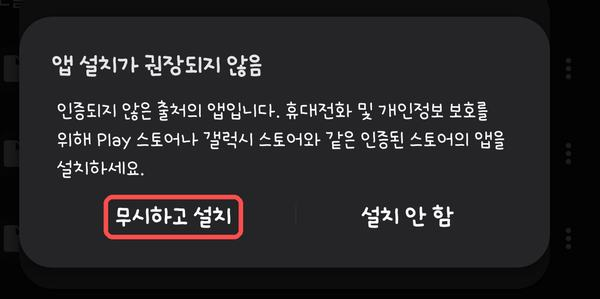
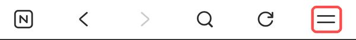
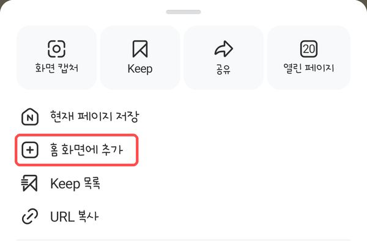
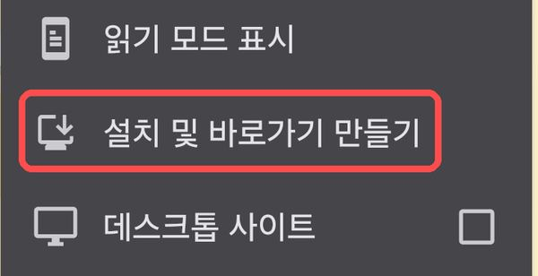
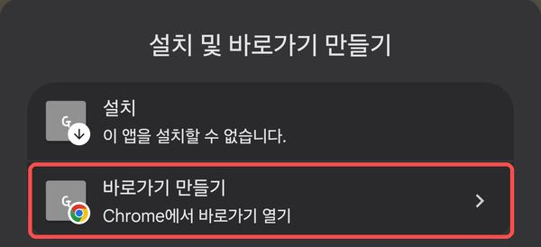
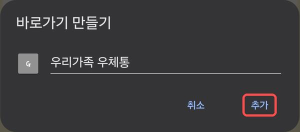
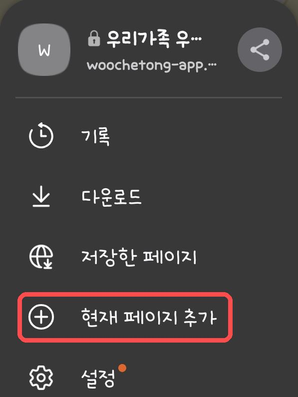
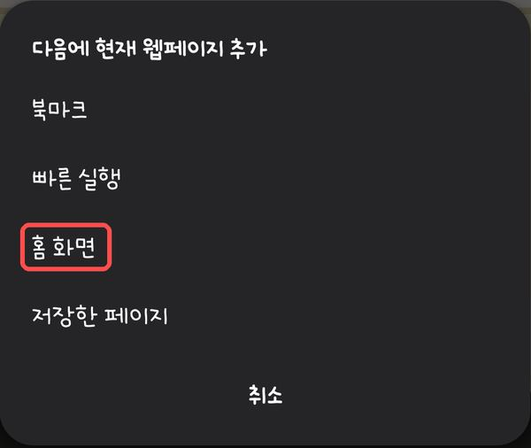

우리가족 우체통
큰 단추 1번, 2번을 차례로 누르세요.
초대 링크가 온전하지 않아요. 받은 링크를 처음부터 끝까지 다시 눌러 주세요.
1앱 깔기맨 먼저 「출처를 알 수 없는 앱 차단됨」이 뜨면
삼성 폰의 보호 기능이 켜져 있어서 그래요. 이렇게 잠깐 꺼 주세요.
설정 → 보안 및 개인정보 보호 → 보안 위험 자동 차단 → 스위치 끄기
그다음 다시 설치하면 돼요. 설치가 끝나면 같은 곳에서 다시 켜 두세요.

① 「유해한 파일일 수도 있음」 → 무시하고 다운로드

카카오톡에서 받았다면, 「내 파일」 앱에 들어가야 내려받은 파일이 보여요!
② 내려받은 파일을 누르세요. 안 보이면 「내 파일」 앱 → 「다운로드」 안의 woochetong.apk를 누르세요.

③ 「앱 설치가 권장되지 않음」 → 무시하고 설치

④ 「앱 검사 권장됨」 → 앱 검사 (잠깐 기다리면 설치돼요)

가족이 직접 만든 앱이라 스토어에 없어서 뜨는 안내예요.
설치가 끝나면 「완료」를 누르고 이 화면으로 돌아와 2번을 누르세요.
다운로드와 설치를 마치면
다시 이 초대장으로 돌아오세요!!!
돌아와서 아래 2번을 누르면 돼요 ↓
2번을 누르면 우체통 앱이 열려요.
가족 비번 숫자 4개를 누르고 내 얼굴을 고르면 끝!
앱은 안드로이드 폰과 태블릿에서만 깔려요. 막히면 가족에게 전화 주세요.
앱을 깔지 않고 이 브라우저에서 바로 써요. 대신 이런 건 안 돼요.
· 알림을 받을 수 없어요. 화면을 열어야 새 편지가 보여요.
· 태블릿에서 편지 창이 저절로 뜨거나 소리 내어 읽어 주지 않아요.
· 인터넷 사용 기록을 지우면 초대장으로 다시 들어와야 해요.
바탕화면에 저장해 두는 법
웹으로 연 다음, 쓰는 브라우저에 맞춰 따라 하세요. 바탕화면에 우체통이 생겨요.
네이버 앱 · 오른쪽 아래 ≡ 를 누르고 → 홈 화면에 추가


크롬 · 오른쪽 위 ⋮ 를 누르고 → 설치 및 바로가기 만들기 → 바로가기 만들기 → 추가



삼성 인터넷 · 오른쪽 아래 ≡ 를 누르고 → 현재 페이지 추가 → 홈 화면

